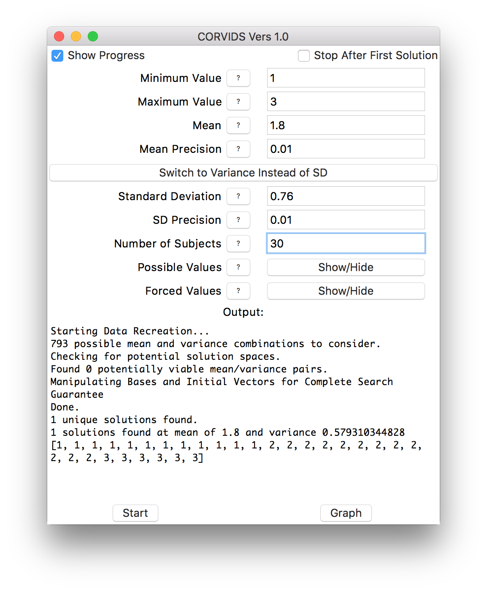
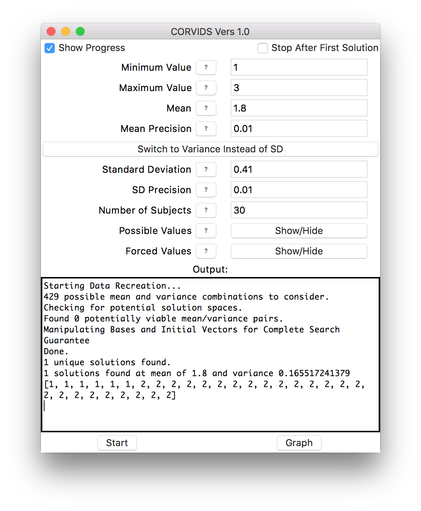
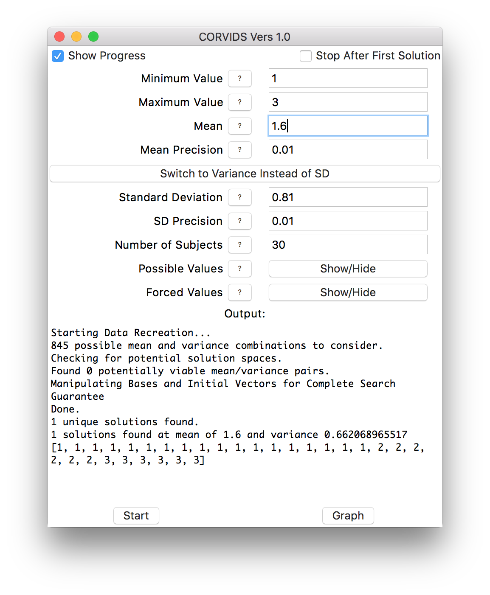
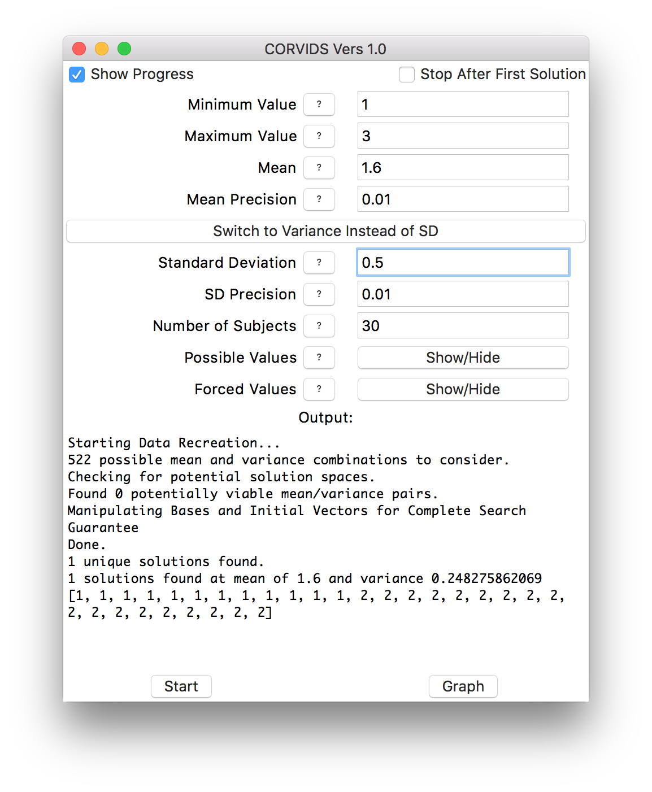

This is a very exciting post for me, as it marks the release of a project that I have been working on with my peerless colleague and dear friend Sean Wilner.
This project started with a question from my advisor–did I think change-making algorithms could be used to reconstruct Likert scale data?–and ended with a complete data-reconstruction system that takes in a few summary statistics for Likert-scale-type data and returns every possible data set which could have generated those statistics, or informs you if no such data exist.
The details of the implementation can be found in our pre-print, and the code is open source and available in a handful of formats here. You can use the source code itself, or download a standalone compiled version of the app (recommended).
Briefly sketched, the CORVIDS (COmplete Reconstruction of Values In a Diophantine System) relies on two things. One is the constrained nature of the data; we know that responses will fall between two endpoints (1 - 7, 0 - 10, etc.) and that the values must be integers. It turns out, these constraints, along with mean, variance (-or- standard deviation), and sample size, are sufficient to reconstruct the raw data. Using this information, we can set up a system of linear Diophantine equations (linear equations which can only take integer values) to solve for all possible data sets. In order to do this, we set up three equations–one for the mean, one for the variance, and one for the sample size–and solve the resulting system of equations. The result is a single solution and a set of transformations which describe all possible solutions to that system of equations (including the actual raw data!).
The theoretical side is pure, provable math, but extra steps need to be taken to make sure something like this can work on real (that is, messy) data. The biggest consideration is precision and rounding. Statistics aren’t always reported to sufficient precision, and rounding errors happen. How do we ensure that we can account for this and still find solutions to reasonable values? We build tolerances into the process. To that end, we have precision arguments you can set that will put an envelope around the mean and variance. The program then finds and chugs through all possible valid combinations of means and variances, looking for viable solutions to all of them. Usually there’s only one valid mean-variance pair in the neighborhood that has a viable solution, but sometimes you will end up with a few candidates that have valid solutions. But this isn’t a problem since the program will give you all of them.
You can also play around with what happens if you forbid certain values from appearing in a solution (“can you still get these numbers if no one is allowed to respond with 1 or 7?”), or if you force certain values to be present (“can you still get solutions if at least 3 people responded 4?”).
A nice test case emerged recently as detailed by Nick Brown and James Heathers, the first installment of which is described here. Here we have data on an integer scale (1-3) with means, standard deviations, and sample sizes reported for every condition.
This is enough for CORVIDS to work. What’s also nice in this instance is that Nick Brown and James Heathers already reconstructed the data manually, and the researcher shared their raw data. So we have ground truth to compare it against. With such a small scale, even at relatively low precision, I was able to reconstruct data for all 6 conditions in about 2 minutes.
Here’s the process: For the first condition (male pedestrians, loose-haired confederate) This is what we would enter into CORVIDS:
As you can see, we’re going to set a fairly generous tolerance for both the mean and standard deviation to account for rounding.
Once our values are entered, we just hit “Start!” CORVIDS will now tell us how many mean/standard deviation combinations it’s going to search through (kind of a lot in this case, when precision is low).
Then all we do is wait. Because the scale is so constrained (just 1 - 3), this process is going to be very fast. For larger scales and large numbers of subjects, it can take much longer.
Here’s what CORVIDS will return once it’s done:
We can see in this case that there is one, and only one, solution. From here, if we wanted, we could save this data out, graph it, save our parameters or save the entire model (paramters and data) to save time later.
This is a nice case, because a reconstruction already exists, and the original author shared his raw data. CORVIDS returns the correct answer.
Just for illustrative purposes, here’s what happens if we really relax the tolerance on the mean and standard deviation. We end up with more solutions, at different mean/standard deviation combinations:
CORVIDS can also graph the results, so we can see how these distributions differ from one another:
One data point switches from 2 to 3 each time.
We can mow through the rest of the conditions in short order, and get the raw data for the other six:
   
If the data weren’t already known, we would know exactly how each individual subject responded.
This is a straightforward case, because the data are so constrained that there happened to be only one solution for each condition. More often, scales are wider than 1-3, there might be more subjects, and often there will be multiple solutions. In that case, you can get a sense of the “family resemblance” between the data sets. Sometimes solutions will all look similar–they might all be right-skewed, for instance. Other times a great many distribution shapes will be possible.
This method can also, in some lucky cases, help resurrect data that was destroyed or simply lost to time. If enough of the summary statistics survived, the raw data can be found again.
We encourage you to download the code and try it yourself! You can submit any issues or bug reports on Github.